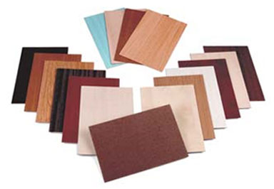
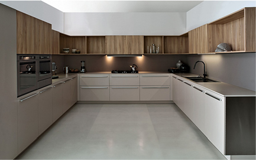
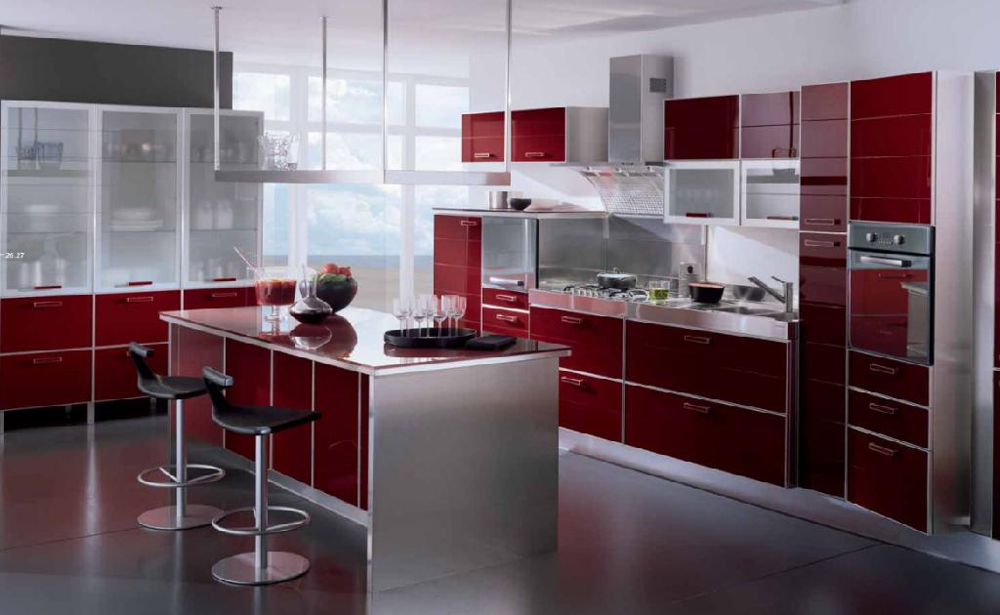
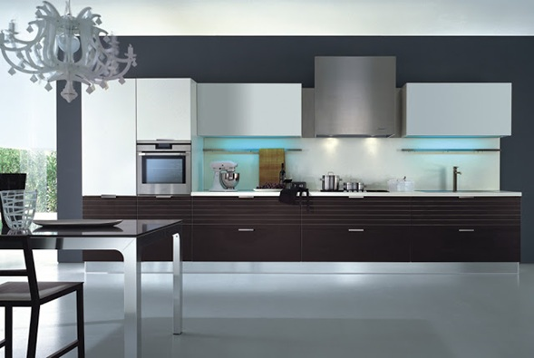

COCINAS INTEGRALES
MADERA TABLEX

MODELOS DE COCINAS INTEGRALES
• COCINA INTEGRAL DE 1.20mts LLAMADAS COCINAS DE PASILLO:
Las cocinas en forma de pasillo son ideales para lugares largos y anchos. Se distribuyen áreas en forma paralela en ambas paredes laterales, con un espacio mínimo de pasillo de 1 mt. Siempre es conveniente ubicar sobre una pared la cocina y pileta, y el resto de las áreas en la otra pared. Esta distribución es muy útil en cocinas con puertas en ambos extremos.Es espacio mínimo de circulación que debe quedar será de 1,20 mts. En este tipo de decoraciones queda muy bien combinar colores, materiales, alturas y profundidades para evitar ambientes.
ESTOS SON UNOS DE LOS MODELOS DE COCINAS DE PASILLOS
COLOR:blanco
TAMAÑO:1.15mts

COLOR: cafe
TAMAÑO: 1.20mts

COLOR: avano
TAMAÑO: 1.17mts

COLOR: miel
TAMAÑO: 1.10mts
• COSINAS EN FORMA DE U:
Este tipo de diseño es uno de los más prácticos para distribuir una cocina, generalmente para cocinas amplias, a las que se le puede agregar una isla central o un desayunador. Pero también puede ser muy útil, bien organizado, en una cocina pequeña. La zona de lavado debe quedar, preferentemente, en el lado corto de la U.
ESTOS SON UNOS DE MODELOS DE COCINAS EN FORMAS DE U

COLOR:tabaco con gris
TAMAÑO: 3mts de largo por 1.25mts de ancho

COLOR: caramelo convinado con wuengue
TAMAÑO: 2.25mtrs de largo por 90cm de ancho

COLOR: blancon con combinado negro
TAMAÑO: 1.90mts de largo por 1mt de ancho

COLOR: rojo con cobinado negro
TAMAÑO: 3mts de largo por 2mts de ancho
COCINAS DE FORMA LINEAL: Las cocinas en forma de línea son ideales para ambientes pequeños, lugares largos y estrechos. Este tipo de cocinas requieren de una buena planificación. Generalmente se colocan los muebles, la cocina, la heladera y la pileta en la misma pared. Si el espacio lo permite se pueden distribuir muebles en la pared de enfrente, con lo que estaríamos teniendo una cocina tipo pasillo.
ESTOS SON UNOS DE MODELOS DE COCINAS EN FORMA LINEAL

COLOR: blanco
TAMAÑO: 1mtr de largo

COLOR: cafe
TAMAÑO: 1.20mts de largo

COLOR: siena
TAMAÑO: 1.10mts de largo

COLOR: castor
TAMAÑO: 1mt de largo
COCINAS DE FORMA DE L: Ideal para habitaciones chicas o cuartos largos y estrechos. Consiste en colocar el área de cocción, los muebles, la pileta, cocina y heladera, en uno de los ángulos utilizando dos paredes en ángulo y dejando las otras libres.
Es una forma práctica de distribuir una cocina, permitiendo un armado correcto del "triángulo de trabajo".
ESTOS SON UNOS DE MODELOS DE COCINAS EN FORMA DE L

COLOR: blanco hueso
TAMAÑO: 1mt de largo por 90 cm de ancho

COLOR: blanco puro con cafe castor
TAMAÑO: 1.10mts de largo por 90cmde ancho